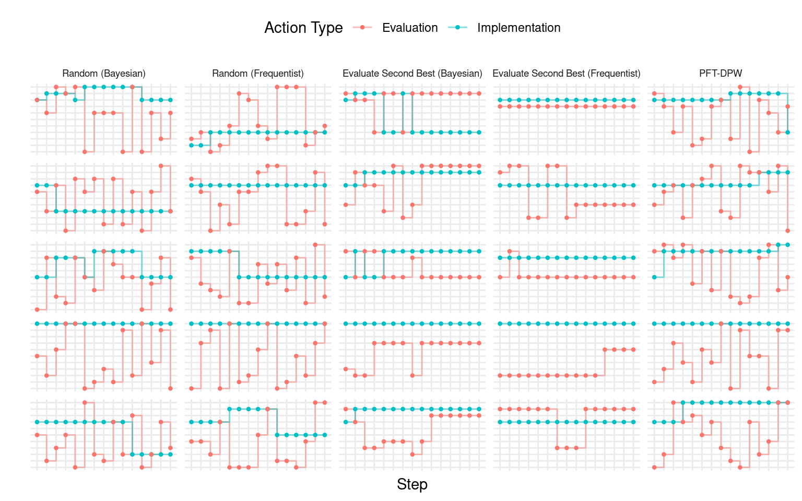
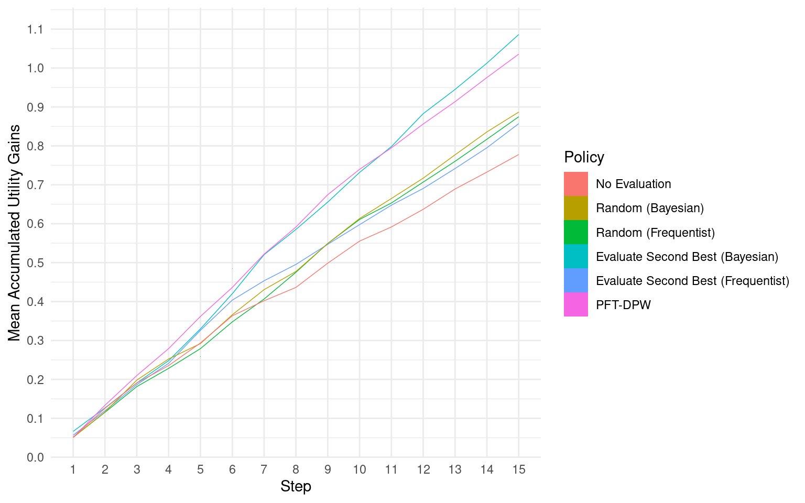

The Funder’s Meta-Problem [Work in Progress]
1 Introduction
The objective of this simulation study is to analyze the sequential decision problem faced by organizations that evaluate and fund charities through the lens of Effective Altruism – to maximize the positive impact of donations on the world. Specifically, this study aims to compare different decision-making policies for:
- Selecting programs to fund from a list of programs whose effectiveness is partially observable.
- Choosing programs to re-evaluate, and so incrementally improving (i).
The problem is modeled as a sequence of decisions made at discrete intervals, given a finite set of programs with uncertain impact on a set of populations. The funder selects optimal programs to implement based on their beliefs about the counterfactual outcomes of these programs for their targeted populations, and decides what data to collect to update these beliefs for the next decision point. The environment and problem are intentionally kept simple to ensure tractability, with the understanding that further studies may revisit these assumptions iteratively.
The funder’s problem is modeled as a bandit problem, but without the restriction of only being able to evaluate implemented programs. Each program is assumed to target a particular population without any overlap, and the cost of implementation is held fixed and equal for all programs. There are no new programs entering the problem over time. The state of each program varies over time and is drawn from a hierarchical and stationary program hyperstate, which determines the data generating process for observed data when a program is evaluated.
While the optimal method to select a program for implementation is a probabilistic one, taking into account the distribution of counterfactual quantities and any available prior information, I also consider the commonly used null hypothesis significance testing (NHST) approach.1 However, my focus is not on comparing the probabilistic and NHST decision rules, but rather on the sequential nature of these decisions in the presence of heterogeneity in program effectiveness. I aim to examine the potential to improve welfare by enhancing the planning scheme used to select programs for re-evaluation, which I refer to as the meta-problem.
My objective is not to identify the optimal policy, but rather to explore the potential for welfare improvement using alternative policies to those conventionally used. It’s important to note that I am simplifying these policies for tractability and not considering all their complexities and context-specific adjustments that expert decision-makers may introduce. Nevertheless, I believe this study captures the essence of how conventionally used policies may underperform in certain scenarios.
Specifically, I aim to highlight the limitations of the following policies: (a) never re-evaluating programs and relying solely on initial evaluations, (b) randomly re-evaluating programs, and (c) using null hypothesis significance testing (NHST) in a simple heuristic policy. I will compare these conventional policies against policies that utilize a partially observable Markov decision process (POMDP) algorithm and a simple heuristic policy that uses Bayesian hierarchical models. Through my analysis, I have found that the alternative policies are able to increase accumulated discounted utility by at least 20% after a few steps.
Furthermore, it is important to highlight that while the framework of the implementation-evaluation problem in this study draws inspiration from the decision-making challenges faced by funding organizations in the realm of international development and global health charities, it is also relevant to the broader context of Effective Altruism. The decision problems faced by Effective Altruism practitioners often involve complex trade-offs and uncertainties, and the insights gained from this study may have broader implications for decision-making in these domains as well.
2 The Environment
In this experiment I’m going to use as simple as possible of an environment while trying to stay faithful to the most pertinent aspects of the real-world environment. The agent is assumed to be confronted with the set \(\mathcal{K}\) of programs and have to decide which program(s) to fund. They will have to repeatedly make revisit this decision over a number of steps. They are also able to select program(s) for evaluation: conducting randomized trials to evaluate their effectiveness.
A good place to start is to model the environment as a multi-armed bandit (MAB). Each program/intervention is represented by such a bandit with a stochastic causal model: at every step in the sequential environment a new state – drawn from a hyperstate – determines the outcomes of the population targeted.
The decision the agent must make at each step is which program to implement and which to evaluate. This is different from typical MAB environments where the agent must decide one arm to pull, which in our context would be implementing and evaluating the same program (we take up the question of what actions are available to the agent in Section 3).
For each program \(k\), we model the data generating process for each individual’s outcome at step \(t\) as,
\[ \begin{align*} Y_{t}(z) &\sim \mathtt{Normal}(\mu_{k[i],t} + z\cdot \tau_{k[i],t}, \sigma_{k[i]}) \\ \\ \mu_{kt} &\sim \mathtt{Normal}(\mu_k, \eta^\mu_k) \\ \tau_{kt} &\sim \mathtt{Normal}(\tau_k, \eta^\tau_k) \end{align*} \] where \(z\) is a binary variable indicating whether a program is implemented or not. We therefore denote the state of a program to be \(\boldsymbol{\theta}_{kt} = (\mu_{kt}, \tau_{kt}, \sigma_k)\).
On the other hand, the hyperstate for each program, \(\boldsymbol{\theta}_k = (\mu_k, \tau_k, \sigma_k, \eta^\mu_k, \eta^\tau_k)\), is drawn from the prior \[ \begin{align*} \mu_k &\sim \mathtt{Normal}(0, \xi^\mu) \\ \tau_k &\sim \mathtt{Normal}(0, \xi^\tau) \\ \sigma_k &\sim \mathtt{Normal}^+(0, \xi^\sigma) \\ \eta^\mu_k &\sim \mathtt{Normal}^+(0, \xi^{\eta^\mu}) \\ \eta^\tau_k &\sim \mathtt{Normal}^+(0, \xi^{\eta^\tau}), \\ \end{align*} \] where \(\boldsymbol{\xi} = (\xi^\mu, \xi^\tau, \xi^\sigma, \xi^{\eta^\mu}, \xi^{\eta^\tau})\) are the hyperparameters for the environment. Thus we are modeling the counterfactual outcomes of program implementation as a hierarchical Bayesian model. This means that while each program has a fixed average baseline outcome, \(\mu_k\), and average treatment effect, \(\tau_k\), at every step normally distributed shocks, with mean zero, alter the realized averages.
In this simple environment this hierarchical structure represents the heterogeneity of program effectiveness over time, emphasizing the limitations of a single evaluation of a program at a particular point in time. I’m making the simplifying assumption that this variation is purely an oscillation without any trends. Furthermore, agents should also be concerned about variations in effectiveness when programs are implemented in different contexts, but we ignore that in this environment assuming the time variation captures the general problem of heterogeneity over time and context.
Just as the funder is not aware of the true state of the world – the true counterfactual model of all programs’ effectiveness – our agent never observes the state or hyperstate of a program. Instead, they are able to evaluate a program by collecting experimental data and updating their beliefs. I assume that the agent has a single observation (data from an evaluation) for each program under consideration. This could be data from an earlier experiment or could represent the agent’s prior beliefs.

Finally, in evaluating which program to implement the agent is assumed to be maximizing welfare measured using a utility function. The program outcomes mentioned above are in terms of an abstract quantity such as income. Introducing a utility function means that we want to introduce the possibility of risk aversion and diminishing marginal utility: that it might be more optimal to increase the utility of those with a lower baseline utility and to implement programs with lower uncertainty. The utility function used is the exponential utility function \[ U(y;\alpha) = 1 - e^{- \alpha y}, \] where \(\alpha\) represents the degree of risk aversion. Typically, we would want to also take into consideration cost-effectiveness, however, in this formulation I assume that all programs have a unit cost.
If there is uncertainty in the outcomes or there is variability in outcomes in the population, we would want to work with expected utility. For example, given some means and standard deviations of outcomes over time, \(\mu_{kt} + z\cdot \tau_{kt}\) and \(\sigma_k\), respectively, the expected utility would be as in Figure 3. Since the agent also never observes the true state, this uncertainty also would have reductive affect on expected utility (if using a risk averse utility function).

3 The Problem
Now that I described the environment the funder finds themselves in, I will take up the problem they are trying to solve. As described, they are confronted with \(K\) programs and they must make two decisions (take two actions)
- Select one program to fund (i.e., to implement) or none.
- Select one program to evaluate or none.
At every \(t\), the agent must choose a (implement, evaluate)-tuple.
\[ a_{t} \in \mathcal{A} = \{(m,v): m, v\in \mathcal{K}\cup\{0\}\}. \]
This presents a relatively simpler problem than is typical of a multi-armed bandit problem; there is no real trade-off to make here between choosing the optimal program to fund and gathering more information on which is the optimal program. Nevertheless, we are confronted by an evaluative problem such that we must choose how to gather information most effectively. Furthermore, while a typical multi-armed bandit problem is not viewed as sequential in the sense that an action at any step does not change future states. However, we can reformulate our problem to use the agent’s beliefs about parameters of the programs’ causal models (Morales 2020; Kochenderfer, Wheeler, and Wray 2022).
In that case, the problem is now Markov Decision Process (MDP). The agent needs a policy, \(\pi(b)\), that selects what action to take given the belief \(b_t(\boldsymbol{\theta})\) over the continuous space of possible states. Putting this together we get the state-value function \[ \begin{align*} V_\pi(b_{t-1}) &= \int_{\Theta,\mathcal{O}} \left[R(a_t, \boldsymbol{\theta}) + \gamma V_\pi(b_{t})\right]p(o\mid\boldsymbol{\theta}, a_t)b_{t-1}(\boldsymbol{\theta})\,\textrm{d}\boldsymbol{\theta}\textrm{d}o \\ \\ a_t &= \pi(b_t) \\ R(a, \boldsymbol{\theta}) &= E_{Y\sim\boldsymbol{\theta}}[U(Y(a))] = \sum_{k\in\mathcal{K}} E_{Y_k\sim\boldsymbol{\theta}_k}\left[U(Y_{k}(a^m_k))\right], \end{align*} \tag{1}\]
where \(o \in \mathcal{O}\) is the data collected based on the evaluation action for a particular program, and using it we update \(b_{t-1}\) to \(b_{t}\).
So given the current belief \(b_t\) and the policy \(\pi\), the agent estimates both the immediate reward and future discounted rewards – given an updated belief \(b_{t}\) continguent on the data collected \(o\) – and so forth recursively. Based on this the accumulated returns would be \[ G_{\pi,t:T} = \sum_{r=t}^T \gamma^{1-r}E_{\boldsymbol{\theta}_r\sim b_{r-1}}[R(\pi(b_{r-1}), \boldsymbol{\theta}_r)], \] where \(T\) is the terminal step.
Unlike a typical MDP the agent does not receive the actual realized reward, but must estimate it conditional on beliefs; program implementers do not automatically receive a reliable signal on the observed and counterfactual rewards. This is an important aspect of the funder’s problem: while in a MAB we would normally observed a reward for the selected arm, or some noisy version of it, in the funder’s environment, we observe an estimate of rewards for the evaluated program only – all other rewards are inferred.
4 The Plans
Now, we take up the question of policies.
- No evaluation, in which we never evaluate any of the programs and only use our initial beliefs, \(b_0\), to decide which program to implement.
- Random evaluation, in which, at every \(t\), we randomly select one of the \(K\) programs to be evaluated.
- Evaluate second-best, in which, at every \(t\), we select the program that has the second highest estimated reward for evaluation.
- Particle Filter Tree with Progressive Depth Widening (PFT-DPW), in which we use an offline Monte Carlo Tree Search (MCTS) policy variant to select the program to evaluate (Sunberg and Kochenderfer 2018).2
For all the policies experimented with, we maintain some kind of belief of the expected utility of implementation counterfactuals. For all of them we use a hierarchical Bayesian posterior to represent our updated beliefs. For the PFT-DPW policy we use a particle filter to efficiently manage these beliefs as we iteratively build a tree of action-observation-belief trajectories.

For the random and second-best policies we also consider a simple Frequentist null hypothesis significance testing approach: we run a regression on all the observed data; test whether the treatment effect is statistically significant at the 10% level; and if so, the point estimate is assumed to be the true treatment effect, and it is assumed to be zero otherwise. Using Frequentist inference essentially ignores uncertainty, but uses the expected utility based on \(\sigma\). This form of inference is meant to highlight the shortcomings of a binary decision theory based on a significance test, or any kind of threshold in lieu of quantifying uncertainty. This is of course a major simplification but helps make the argument more intuitive.
The reasoning behind this selection of policies/algorithms/heuristics is not to identify an optimal one, but to consider how some commonly used approaches might compare to each other. In particular, the Frequentist no-evaluation and random policies are the closest to what funders and implementers typically do.
So given this set of policies, \(\Pi\), the meta-problem that we want to solve is choosing the best policy, \[ \max_{\pi \in \Pi} W_T(\pi) = E_{\boldsymbol{\theta}\sim\boldsymbol{\xi}}\left\{ \sum_{t=1}^T\gamma^{t-1}E_{\boldsymbol{\theta}_t\sim\boldsymbol{\theta}}[R(\pi(b_t), \boldsymbol{\theta}_t)] \right\}. \tag{2}\]
5 Results
This simulation experiment runs \(S = 270\) episodes.3 For each one, we draw the \(K\) hyperstates from the prior, \(\boldsymbol{\theta}_s\sim\boldsymbol{\xi}\), then for each \(1\leq t \leq T\), we draw the states, \(\boldsymbol{\theta}_{st}\sim\boldsymbol{\theta}_s\). We then run each of our policies through this episode, deciding on which programs to implement and which are to be evaluated to update beliefs, \(b_{st}\). That means we observe the trajectory of \((b_{s,0}, a_{s,1}, o_{s,1}, b_{s,1}, a_{s,2}, o_{s,2}, b_{s,2},\ldots)\) for each policy given the same states and hyperstates.
To evaluate the policies’ performance we compare their mean accumulated discounted utility to the same quantity when none of the programs are implemented. In Figure 5, we observe how this difference evolves over the \(T\) steps of the episode: we see that the best performers are the PFT-DPW and Bayesian evaluate-second-best policies. We observe lower performance from the two Frequentist policies and the random Bayesian policy. Lastly, the worst performer is the no-evaluation policy where we make decision based on \(b_0\) only.


To make this comparison clearer we calculate the percentage difference between our highest performing policies with: (i) the no-evaluation policy and (ii) the random Bayesian policy (which is roughly on par with the random Frequentist policy). Compared to the policy of never re-evaluating a program once it is selected for implementation, we observe average accumulated welfare for the Bayesian evaluate-second-best and the PFT-DPW offline that is more than 20% higher after four episode steps and passing 30% after seven steps. Compared the Frequentist policies (evaluate-second-best and random) the highest performers are around 20% better after five steps.

6 Conclusion
References
Footnotes
Given a risk-neutral utility function and very weakly informed priors, both these methods are often assumed to result in very similar decisions. However, a winning entry in GiveWell’s Change Our Minds Context by Haber (2022) showed that threshold-based method, like NHST, suffers from bias caused by the winner’s curse phenomenon.↩︎
The PFT-DPW algorithm is a hybrid approach for solving partially observable Markov decision processes (POMDPs) that combines particle filtering and tree-based search. It represents belief states using a tree data structure and uses double progressive widening to selectively expand promising regions of the belief state space. Particle weights are used to represent the probabilities of different belief states, and these weights are updated through the particle filtering and tree expansion process. Actions are selected based on estimated belief state values, and the tree is pruned to keep it computationally efficient.↩︎
Why not more? Each simulated episode can take a significant amount of time, particularly when using the PFT-DPW policy which runs 1,000 iterations at every step before selecting a program for evaluation. Even simpler policies, such as the random policies, take some time when we use a Bayesian model to update beliefs; we fit all the observed data for a program at every new evaluation.↩︎